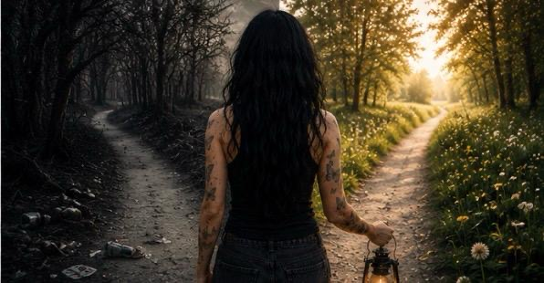

Dette er et innlegg jeg lenge har tenkt på å skrive, men som jeg kvier meg litt for.
Noe av det jeg synes er trist når det kommer til edring, eller tilfriskning, er det jeg hører «mellom linjene» i podkaster, ser på sosiale medier og noen ganger også opplever i ulike fellesskap.
At det kan virke som om det nesten er en konkurranse om hva som er den rette veien, og hva som er det rette verktøyet for å holde seg edru og rusfri.
Da jeg for mange år siden var med i samfunnet This Naked Mind – grunnlagt av Annie Grace, som jeg for øvrig har den største respekt for – eller da jeg var med i andre grupper, eller da jeg var med i AA, føltes det av og til sånn.
Det var som om man måtte velge side.
Som om man måtte finne den ene rette veien.
At man måtte holde seg til én bestemt oppskrift.
Og det er akkurat det jeg vil skrive litt om nå.
At for meg handler det om én ting:
Å holde meg edru.
Hvis jeg kombinerer møter i TNM, AA og TS, står jeg i min fulle rett til å gjøre det.
Det ene utelukker ikke det andre.
For meg handler dette om min reise.
Hvordan jeg kan lære meg nye verktøy.
Hvordan jeg kan lytte til andre menneskers delinger og erfaringer – uavhengig av om de mener Annie Grace eller Bill W. sitter med den absolutte fasiten.
Vi har for eksempel en på møtene våre som også bruker NA, og det synes jeg er fint.
At han bruker møtene til det de er ment å være:
et trygt rom der han kan gå sin egen, unike vei.
Så, tilbake til det jeg ville skrive om:
De tolv trinnene i Anonyme Alkoholikere.
Det er kanskje et av de mektigste verktøyene som finnes for å reise seg fra avhengighet.
De har reddet millioner av liv.
De var en viktig del av min vei ut.
Men i starten slo jeg meg litt på ordene.
Når man står midt i skammen, kan ord som «maktesløs», «Gud» og «moralsk fortegnelse» noen ganger føles tunge.
De kan føles som krav, eller som et språk som tilhører noen andre.
For at trinnene skulle synke inn i min hjerne – den hjernen som i årevis hadde operert i ren overlevelsesmodus – måtte jeg oversette dem.
Jeg måtte finne mine egne ord.
Dette er ikke en ny fasit.
Det er ikke et forsøk på å endre på noe som allerede fungerer.
Dette er bare min personlige oversettelse.
Slik ser de tolv skrittene på Edrustien ut gjennom mine øyne.
Slik jeg har valgt å forstå dem.
Slik jeg velger å jobbe med dem.
Og slik de hjelper meg med å finne veien hjem:
Skritt 1 – Ærlighet
Jeg sluttet å kjempe mot sannheten.
Jeg innså at avhengigheten ikke var noe jeg kunne kontrollere.
Jeg sluttet å forhandle med den og begynte å være ærlig med meg selv.
Det var ikke nederlaget som gjorde meg fri.
Det var sannheten.
Skritt 2 – Håp
Jeg fant noe tryggere enn avhengigheten å lene meg mot.
Ikke nødvendigvis en Gud.
Men håp.
Naturen.
Universet.
Stillheten.
Sannheten.
Mennesker som gikk veien før meg.
Jeg oppdaget at jeg ikke trengte å bære alt alene.
Skritt 3 – Valg
Jeg begynte å velge det som gir liv.
Ikke det som føltes kjent.
Men det som var trygt.
Ikke det som ga rask lindring.
Men det som ga meg et bedre liv.
Én dag av gangen.
Skritt 4 – Forståelse
Jeg våget å møte meg selv.
Ikke for å dømme.
Men for å forstå.
Jeg begynte å se forskjellen på hvem jeg er …
… og den jeg måtte bli for å overleve.
Skritt 5 – Sannhet
Jeg sluttet å bære historien min alene.
Jeg satte ord på sannheten.
For når skammen blir delt med et trygt menneske,
mister den litt av makten sin.
Skritt 6 – Frigjøring
Jeg ble villig til å gi slipp.
Ikke på meg selv.
Men på det som hindret meg i å leve.
Gamle mønstre.
Gamle overlevelsesstrategier.
Gamle sannheter som ikke lenger var sanne.
Skritt 7 – Ydmykhet
Jeg øvde meg på å være menneske.
Jeg sluttet å tro at jeg måtte være perfekt.
Jeg begynte å ta imot hjelp.
Og lot livet forme meg, i stedet for å kjempe mot det.
Skritt 8 – Ansvar
Jeg så hvem smerten min hadde berørt.
Ikke for å drukne i skyld.
Men fordi jeg ønsket å leve annerledes.
Skritt 9 – Forsoning
Jeg gjorde opp så langt det var mulig.
Ikke for å bli likt.
Men for å kunne møte mitt eget speil uten å se bort.
Og jeg lærte at noen ganger er den viktigste forsoningen den vi gjør med oss selv.
Skritt 10 – Bevissthet
Jeg fortsatte å være ærlig.
Jeg sluttet å vente til livet raste sammen.
Jeg justerte kursen litt, hver dag.
Når jeg snublet, reiste jeg meg igjen.
Skritt 11 – Ro
Jeg øvde meg på å være stille.
Midt i støyen.
Midt i frykten.
Midt i livet.
For det er ofte i stillheten jeg finner hjem til meg selv.
Skritt 12 – Videre
Jeg gikk tilbake for å lyse opp stien.
Ikke fordi jeg var ferdig.
Men fordi ingen burde måtte gå denne veien alene.
Jeg delte historien min.
Ikke for å leve i fortiden.
Men for å gi håp til den som fortsatt står i mørket.
For meg handler ikke edring om å bli et nytt menneske.
Den handler om å finne hjem til den jeg alltid har vært.
Og veien dit går ikke i store sprang.
Den går …
ett skritt av gangen.
Og i dette universet, i Edrulandet, på Edrustien, der jeg – Alise – går sammen med Herr Percy og alle dere andre jeg møter på møter eller her på bloggen, hjelper disse tolv skrittene meg.
Ikke som en fasit.
Men som ett av mange verktøy jeg bruker.
Det viktigste er ikke hva verktøyet heter.
Det viktigste er at det hjelper meg å velge bort det første glasset.
Én dag av gangen.
Det skylder jeg meg selv.
Så hvis du sitter der ute og føler deg som blekkspruten nede i dypet – alene med dine egne nervebaner og dine egne gjemmesteder – så vit at du ikke trenger å svelge andres ord rått for å bli edru.
Du må bare finne de ordene som er sanne for deg.
